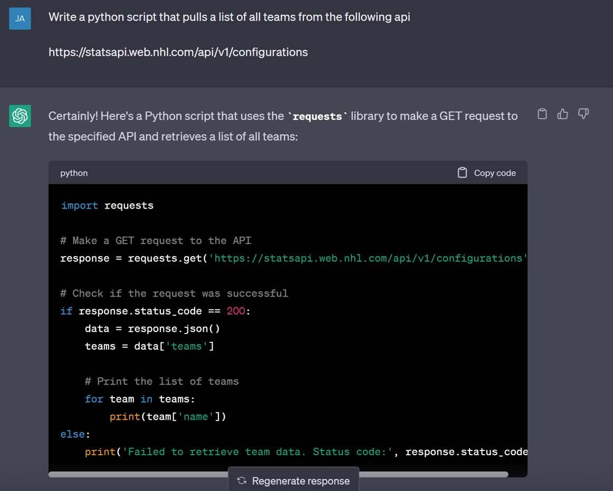
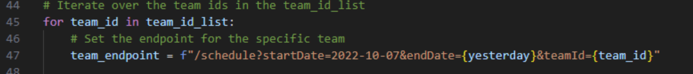
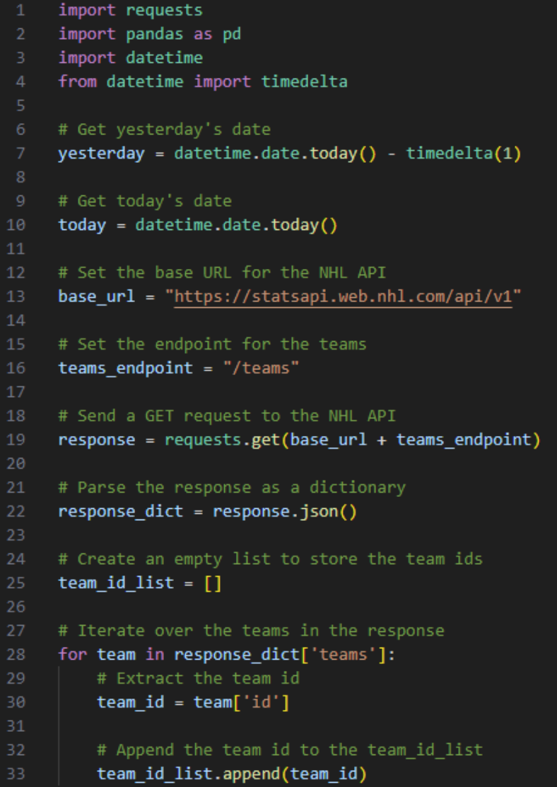
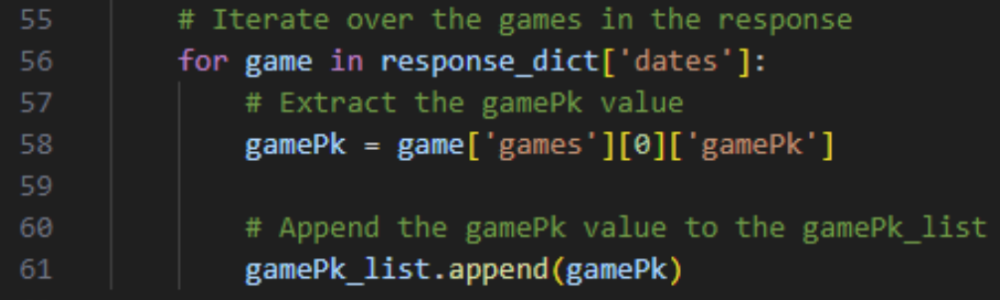
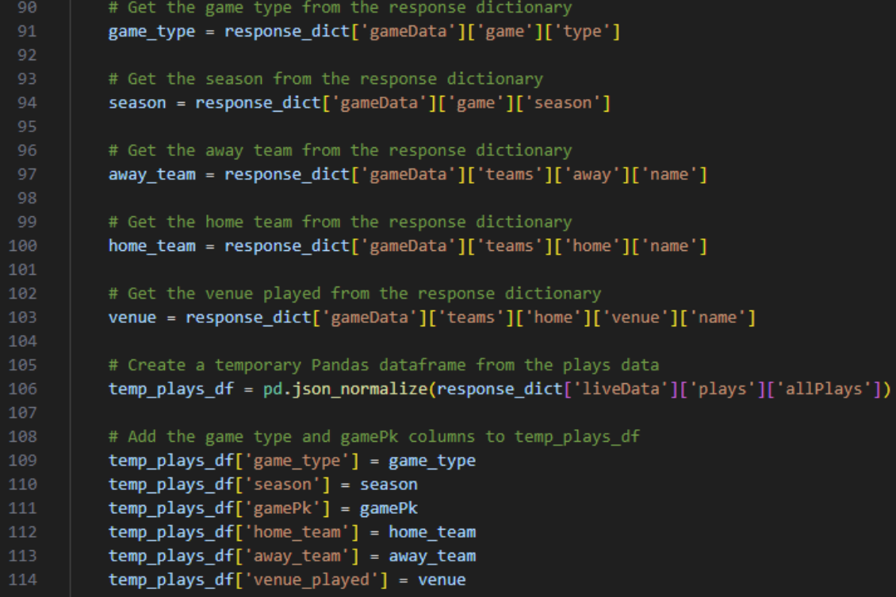
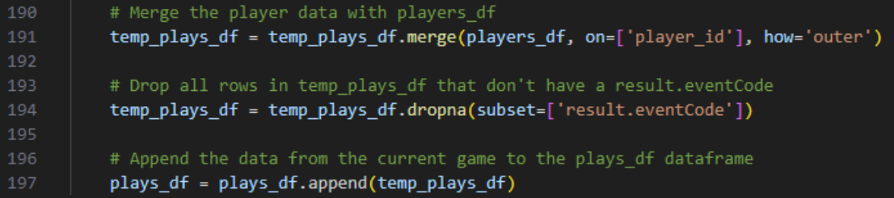
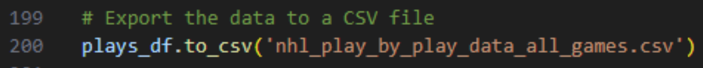

NHL Player Stats With Jared Flores Pt1 (Python)
Hi all, It's a delight to be able to welcome Jared Flores onto the blog today. Jared is in fact the first person to make multiple guest appearances on the site! Pretty good going huh. Of course, when I'm not convincing Jared to write content to host on this channel you can find him on his own Youtube, Tableau Public, website and Twitter. Jared will look to cover off using Tableau Prep, ChatGPT, and Python to create an interactive and in-depth Tableau Dashboard around your favorite NHL stars. The blog will be split into two sections. The first using ChatGPT to help with coding. The second will look at data cleansing and Tableau. All code and files as usual can be found through the Github link! Over to Jared for todays content.ChatGPT has been all the buzz lately. From writing quirky jokes to negotiating lower prices with customer service chats, there have been so many use cases uncovered since it’s public release. A few months ago, I wanted to see if I could use it to assist me in writing some Python to pull data from the NHL’s public API so I could create a dashboard with the data. The process has evolved over time but the results were amazing. I’m going to show you from beginning to end what it took to create the NHL Player Stats Dashboard.
ChatGPT and Python
The First thing I did was find the link to the NHL API: https://statsapi.web.nhl.com/api/v1/configurations
This link lists the main endpoints which contain various pieces of information. I started with a simple prompt:
While this wrote a general python script to request the data, ChatGPT didn’t have all the information it needed to actually pull any relevant information. I explored some of the links listed in the configurations endpoint and ended up using the following:
https://statsapi.web.nhl.com/api/v1/teams - This endpoint contains data about all teams
https://statsapi.web.nhl.com/api/v1/schedule - This endpoint contains the schedule for a specified date range
https://statsapi.web.nhl.com/api/v1/people/{ID} – This endpoint returns data for a specific player. You must enter their ID for valid results
https://statsapi.web.nhl.com/api/v1/game/{ID}/feed/live - This endpoint returns the play-by-play data for a specified game, provided you have the game id
Drew Hynes has created a publicly accessible documentation site around the most common uses for the API which can be found here: https://gitlab.com/dword4/nhlapi
Once I got my bearings with the API, I had a few main pieces of data I wanted to grab:
- Play-by-play data for every game in the current regular season
- A list of all current rosters for all teams
- Player specified metrics for all games (Time on Ice, Shots Taken, Goals, Faceoffs etc.)
- Final Score
I ended up creating a python script for each of these data sets with the assistance of ChatGPT. What I found was GPT helped me get started, but never really provided a 100% working code without a lot of re-prompting. It definitely helped speed up the entire process, but it still required some familiarity with Python and also an understanding of the JSON format of the data. Let’s dig in to what the main bit of code does.
Accessing the NHL API
Firstly, we get the team IDs. The base URL for the NHL API is https://statsapi.web.nhl.com/api/v1. We then append /teams to this URL to get the endpoint for teams. Using the requests.get() function, we make a GET request to this endpoint, parse the JSON response into a Python dictionary, and extract the team IDs.
Fetching Specific Game Data
Next, we use these team IDs to fetch the games each team has played since a specific date. We construct the URL for the endpoint using the base URL, the date range, and the team ID.
For each team, we extract the gamePk values, which are unique identifiers for each game.
 Extracting Detailed Game Data
Using the gamePk values, we then fetch the detailed data for each game. This includes information about the game type, season, teams, venue, and plays. We extract the data we're interested in and store it in a temporary Pandas DataFrame.
Extracting Player Data
An additional layer of complexity is the player data nested within each play. We define a function extract_players to handle this. The function checks if the players column is a list, and if so, creates a DataFrame to store the player data. It then iterates over the players in the list, extracts the player's data, and appends it to the DataFrame.

Merging and Cleaning Data
Next, we merge our play-by-play data with player data and clean it up, dropping rows without a result.eventCode. We then append this cleaned data to our main DataFrame, which stores data from all games.
Exporting Data to CSV
Finally, we export the data to a CSV file, ready for further analysis or visualization in a tool like Tableau.
I ended up with a dataset like seen in the GitHub Repo.
With the help of ChatGPT and Python, we have a complete script that fetches, processes, and exports NHL game data for any given time period.
There was a slight problem though. The way the NHL captures events, there are multiple rows associated with each unique event. For example, when a player scores a goal, there is a row for each of the following:
- The goal scorer
- The primary assister
- The secondary assister
- The goalie scored against
Each goal in the map needed to have a clear description as to who scored, assisted, and who was in net. I also have charts that break down goal types, opposing teams, opposing goalies etc. so to capture all of this, I needed each row to contain all of these data points instead of having a row for each. You’d think it was a simple pivot that needed to happen, but some of these events are conditional. That’s where Tableau Prep Came in!
Join us in the next few days for Part 2, where I look to go through Tableau Prep & Desktop to creating my NHL visuals. CJ Round-Up: Jared raises some really interesting points above around API end points, but rightly describes how ChatGPT can be leveraged as developers to be able to 'fill the gaps' on writing code to help us. I am so excited for Part 2 in coming days where we get our hands on some prep & desktop to recreate elements within Jared's visual that you can find here. LOGGING OFF, CJ